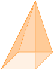

In geometry, a solid is a three-dimensional object that occupies a volume of space. There are many different types of solids, each with its own unique properties and characteristics. Some of the most common solids include cubes, prisms, pyramids, cylinders, cones, and spheres. In this section, we will explore some of the basic properties of these solids and how they can be used in geometry.
Subsection4.4.1Identification of common solids
In grade 6, you learnt about the faces, edges and verticies of 3D objects.Discuss the different types of 3D objects.
In this section, you will identify common solids.
Activity4.4.1.
\(\textbf{Work in groups.}\)
Collect solids of different shapes around your school compound.
Group them according to their shapes.
In each case count the number of faces, edges and verticies a solid has.
Discuss and share with other groups.
Subsection4.4.2The net of a cube
In the previous section, you identified a cube. Discuss what to look for when identifying a cube.
In this section, you will sketch nets of a cube.
Activity4.4.2.
\(\textbf{Work in groups.}\)
What you need: model of a cube and a pair of scissors or cutting tool.
(a). Examine a cube model like the one provided below.
(b). Count and name the faces, edges, and vertices.
Carefully cut the cube along its edges.
Lay the cube flat after opening it up.
Observe the unfolded model and sketch its shape.
What is the name of this \(2D\) layout?
Compare your drawing with those made by other groups. Do they look the same?
\(\textbf{Key Takeaway}\)
A cube can be either closed or open.
A closed cube has six square faces.
An open cube will only have five faces because one side is missing.
Net is a pattern formed when an object is opened up and laid out on a flat surface.
Activity4.4.3.Exploring Net of a Cube Using a Slider.
Click and drag the View 3D to view the cube and its net from a different angle.
Click and drag the Open-Close slider to open and close the cube.
Use the Pattern slider to change to a different net of a cube. How many different nets of a cube are there?
Figure4.4.1.
Example4.4.2.
Draw a net of the cube shown below.
Solution.
Subsection4.4.3The net of a cuboid
In the previous section, you identified a cuboid. Discuss what to look for when identifying a cuboid.
In this section, you will sketch nets of a cuboid.
Activity4.4.4..
\(\textbf{Work in pairs}\)
What you need: model of a cubouid and a pair of scissors.
Examine a cuboid similar to the one shown below.
Identify and observe its faces, edges, and vertices.
Cut along the edges of the cuboid to unfold it.
Lay the opened cuboid flat on a surface.
Draw the shape of the unfolded cuboid.
What do you notice about the shape?
Compare your drawing with those of other groups.
\(\textbf{Key Takeaway}\)
A closed cuboid has \(6\) faces. Each face is a rectangle. A net of a closed cuboid is made up of \(6\) rectangles.
An open cuboid has \(5\) faces. Each face is a rectangle. A net of an open cuboid is made up of \(5\) rectangles.
Activity4.4.5..
To explore the net of a cuboid Using a slider.
Figure4.4.3.
Subsection4.4.4The net of a cylinder
In the previous section, you identified a cylinder. Discuss what to look for when identifying a cylinder.
In this section, you will sketch nets of a cylinder.
Activity4.4.6..
\(\textbf{Work in pairs}\)
What you need: model of a cylinder and a pair of scissors (or a cutting tool).
(a).Take a close look at a cylinder model similar to the one shown below.
(b). Can you find any flat surfaces, curved surfaces, edges, or vertices?
Carefully cut the cylinder along its side and base.
Gently unfold the shape and lay it flat on your desk.
Observe the flattened shape and draw what you see.
Identify and label the shapes that make up the cylinder when opened out.
Share and compare your diagrams with those from other groups. What similarities or differences can you see?
\(\textbf{Key Takeaway}\)
A cylinder has 3 faces. Two faces are circles and one face is a rectangle. A net of a cylinder is made up of 2 circles and 1 rectangle.
A closed cylinder includes two circular ends and one curved side.
An open cylinder has only one circular end and the curved surface.
\(\textbf{To observe the net of a cylinder.}\)
Figure4.4.4.
Example4.4.5.
Sketch the net of the cylinder given below.
Solution.
The net of the cylinder is shown below.
Subsection4.4.5Net of a Pyramid
Activity4.4.7.
\(\textbf{Work in groups.}\)
What you need: model of a pyramid and a pair of scissors or cutting tool.
Examine a pyramid model like the one shown below.
Count and name the faces, edges, and vertices.
Carefully cut the pyramid along its edges.
Lay the pyramid flat after opening it up.
Observe the unfolded model and sketch its shape.
What is the name of this 2D layout?
Compare your drawing with those made by other groups. Do they look the same?
\(\textbf{Key Takeaway}\)
A square base pyramid has 5 faces. The base is a square and the other 4 faces are triangles. A net of a square base pyramid is made up of 1 square and 4 triangles.
A rectangle base pyramid has 5 faces. The base is a rectangle and the other 4 faces are triangles.
A triangle-base pyramid has a triangle as its base.
The net of a pyramid is a two-dimensional representation of the three-dimensional shape of the pyramid. It is made up of the faces of the pyramid laid out flat, so that you can see all of the sides at once. The net of a pyramid is useful for visualizing the shape of the pyramid and for calculating its surface area and volume.
Activity4.4.8.Net of a Square based Pyramid.
Study the pyramid like the one shown below.
use the height slider to increase and decrease the height of the pyramid and observe what happens to the overall shape as the height changes.
move the size of base slider to change the base length of the pyramid and note changes in the base area and overall structure.
Opens and closes the pyramid and observe how the faces move and connect back together.
Figure4.4.6.
Activity4.4.9.
Unfold and fold a net for a pyramid. Change the dimensions of the pyramid to explore its geometry.
Figure4.4.7.
Example4.4.8.
Draw the net of the pyramid shown below.
Solution.
The net of the pyramid is shown below.
Subsection4.4.6The net of a cone
Activity4.4.10.
\(\textbf{Work in groups.}\)
What you need: model of a cone and a pair of scissors or cutting tool.
Examine a cone model like the one shown below.
Does the cone have faces, edges and vertices?
Carefully cut the cone along its edges.
Lay the cone flat after opening it up.
Observe the unfolded model and sketch its shape.
What is the name of this 2D layout?
Compare your drawing with those made by other groups. What do you notice?
\(\textbf{Key Takeaway}\)
A cone has \(2\) faces. One face is a circle and the other face is a curved surface. A net of a cone is made up of \(1\) circle and \(1\) sector.
The net of a cone is a two-dimensional representation of the three-dimensional shape of the cone. It is made up of the curved surface of the cone laid out flat, so that you can see the shape of the cone. The net of a cone is useful for visualizing the shape of the cone and for calculating its surface area and volume.
Activity4.4.11.Net of a Cone.
Use slide \(r\) to change the radius of the base and slider \(h\) to change height of the cone.
Use the Net slider or press the play button to show how the cone unraps into its net.
Figure4.4.9.
Activity4.4.12.
To Observe the net of cone.
Use of slider then observe the visualization of Net.
Figure4.4.10.
Activity4.4.13.
Net of a Cone
Figure4.4.11.
Subsection4.4.7Surface area of a cube
In this section, you will calculate the surface area of a cube from the nets.
Activity4.4.14..
\(\textbf{Work in pairs}\)
What you need: A piece of Paper,A pencil,A ruler and A pair scissors.
Draw a net of a cube on a piece of paper, ensuring it has \(6\) connected squares. Each square represents a face of the cube as shown below.
(a). Use your ruler to measure the side length of one square and record it down.
(b). Work out the area of each face of the net.
(c). Work out the total area of the faces
Discuss your results with other groups.
\(\textbf{Key Takeaway}\)
The surface area of a cube is the total area of all six faces of the cube. When learning about area, you calculated the surface area of a cube by adding up the areas of all six faces.
Example4.4.12.
The figure below show a cube.
(a). Sketch the net of the cube
(b). Work out the surface area of the cube from its net.
Solution.
(a). \(\textbf{The net of the cube is as shown.}\)
(b). \(\textbf{The surface area of the cube.}\)
\({\color{green} \text{Method 1.}}\)
\begin{align*}
\text{The area of one face=} \amp 8 cm \times 8 cm\\
= \amp 64 cm^2\\
\text {There are 6 surfaces.Therefore the surface area of the cube is;} \amp \\
= \amp 6 \times 64 cm^2\\
= \amp 384 cm^2
\end{align*}
\({\color{green} \text{Method 2.}}\)
\begin{align*}
\text {Area of a square=} \amp length \times width\\
\text {Area of square A}= \amp8cm \times 8 cm \\
= \amp64 cm^2 \\
\text {Area of square B}= \amp8cm \times 8 cm \\
= \amp64 cm^2 \\
\text {Area of square C}= \amp8cm \times 8 cm \\
= \amp64 cm^2 \\
\text {Area of square D}= \amp8cm \times 8 cm \\
= \amp64 cm^2 \\
\text {Area of square E}= \amp8cm \times 8 cm \\
= \amp64 cm^2 \\
\text {Area of square F}= \amp8cm \times 8 cm \\
= \amp64 cm^2 \\
\text{ surface area}=\amp64 cm^2 +64 cm^2 +64 cm^2 +64 cm^2 +64 cm^2 +64 cm^2 \\
= \amp 384 cm^2
\end{align*}
Subsection4.4.8Surface area of a cuboid
When learning about area, you calculated the surface area of a cuboid.
In this section, you will calculate the surface area of a cuboid from their nets.
Activity4.4.15..
\(\textbf{Work in pairs}\)
Consider a cuboid measuring \(15\, cm\) by \(10\, cm\) by \(5\, cm\text{.}\)
Draw a net of the cuboid as shown below.
Calculate the area of each face (rectangle) in the net.
Find the sum of the areas of the faces (rectangles).
Discuss and compaire with other groups
\(\textbf{Key Takeaway}\)
The surface area of a cuboid is the sum of the areas of all six faces.
Activity4.4.16.
Surface area of Cube and Cuboid
View the net of a cuboid in order to understand how to find the surface area of the cuboid.
Figure4.4.13.
Example4.4.14.
The figure below shows a cuboid.
(a). Sketch the net of the cuboid.
(b). Work out the surface area of the cuboid from its net.
Solution.
(a).The figure below shows the net of the cuboid.
\begin{align*}
\text {(a). Area of a rectangle} = \amp length \times width\\
\text {Area of rectangle A}= \amp6 cm \times 5 cm \\
= \amp 30 cm^2\\
\text{Area of rectangle B}= \amp6 cm \times 4 cm \\
= \amp 24 cm^2\\
\text{Area of rectangle C}= \amp6 cm \times 5 cm \\
= \amp 30 cm^2\\
\text{Area of rectangle D}= \amp6 cm \times 4 cm \\
= \amp 24 cm^2\\
\text{Area of rectangle E}= \amp4 cm \times 5 cm \\
= \amp 20 cm^2\\
\text{Area of rectangle F}= \amp4 cm \times 5 cm \\
= \amp 20 cm^2\\
\text{Surface area}= \amp30 cm^2+24 cm^2+30 cm^2+24 cm^2+20 cm^2+20 cm^2 \\
= \amp148 cm^2
\end{align*}
Subsection4.4.9Surface area of a cylinder
Activity4.4.17.
\(\textbf{Work in pairs}\)
What you need: Model of a cylinder made of paper, A pair of scissors or a cutting tool, a ruler and a pencil.
Using a ruler, Measure the height and diameter of the cylinder.
Sketch the net of the cylinder
Work out the circumference of the circular part.
Calculate the area of each face of the net
Work out the total area of the faces.
Discuss your results the with other groups
\(\textbf{Key Takeaway}\)
The surface area of a cylinder is the total area of the curved surface and the two circular bases of the cylinder.
The length of the rectangle is equal to the circumference of the circular base of the cylinder, which is given by the formula \(2\pi r\text{,}\) where \(r\) is the radius of the base.
The width of the rectangle is equal to the height of the cylinder, which is given by the formula \(h\text{.}\)
Activity4.4.18.
Surface Area Formula for Cylinders
Open up a cylinder and make observations about its surface area using its net.
Figure4.4.15.
Example4.4.16.
The figure below shows a cylinder whose radius and height are \(14\)\(cm\text{.}\)and \(15\)\(cm\) respectively.
(a). Sketch the net of the cylinder.
(b). Work out the surface area of the cylinder from its net.
Solution.
(a).The net of the cylinder is shown below
\begin{align*}
\text{(b). Length of the rectangle=} \amp 2 \times \pi \times radius \\
= \amp 2\times\frac{22}{7}\times14\\
= \amp 88 cm
\end{align*}
The width of the rectangle is equal to the height of the cylinder =\(15\)\(cm\)
\begin{align*}
\text{Area of the rectangle}= \amp length \times width \\
= \amp88 cm \times 15 cm \\
= \amp1320 cm^2 \\
\text{Area of two circles}= \amp2\times \pi\times r^2 \\
= \amp 2\times \frac{22}{7}\times14 \times14\\
= \amp1232 cm^2 \\
\text{Surface area}= \amp1329 cm^2 +1232 cm^2 \\
= \amp2552 cm^2
\end{align*}
Subsection4.4.10Surface area of a pyramid
Activity4.4.19.
\(\textbf{Work in pairs}\)
What you need: Model of a pyramid made of paper, A pair of scissors or a cutting tool, a ruler and a pencil.
Study the model of a pyramid below.

Sketch the net of the pyramid and label its sides.
Calculate the area of each face of the net.
Work out the total area of the faces. What do you notice?
Discuss your results with other groups.
\(\textbf{Key Takeaway}\)
The surface area of a pyramid is the sum of the area of the base and the area of the triangular faces.
Example4.4.17.
Calculate the surface area of a pyramid whose base is rectangular and slant height \(6\)\(cm\) as shown below.
Solution.
\(\textbf{First we form the net of the pyramid.}\)
\begin{align*}
\text {The area of the rectangular base} = \amp length \times width\\
= \amp5 cm \times 3 cm \\
= \amp 15 cm^2\\
\text {The height of triangles with base of 5 cm =} \amp\sqrt{6^2-2.5^2} \\
= \amp\sqrt{36-6.25} \\
= \amp\sqrt{29.75} \\
= \amp 5.45 cm (2 d.p)\\
\text{The area of a triangle with base of 5 cm=} \amp\frac{1}{2}\times base \times height \\
= \amp\frac{1}{2} \times 5 \times 5.45 \\
= \amp13.625 cm^2 \\
\text{Since this triangles are two,Therefore total area}= \amp 2 \times 13.625\\
= \amp27.25 cm^2 \\
\text {The height of triangles with base of 3 cm =} \amp\sqrt{6^2-1.5^2} \\
= \amp\sqrt{36-2.25} \\
= \amp\sqrt{33.75} \\
= \amp5.81 (2 d.p) \\
\text{The area of a triangle with base of 3 cm=} \amp\frac{1}{2}\times base \times height \\
= \amp\frac{1}{2} \times 3 \times 5.81 \\
= \amp 8.715 cm^2 \\
\text{Since this triangles are two,Therefore total area}= \amp 2 \times 8.715\\
= \amp17.43 cm^2 \\
\text {Therefore, the surface area of the pyramid is,} \amp \\
= \amp15 cm^2 + 27.25 cm^2 + 17.43 cm^2 \\
= \amp59.68 cm^2
\end{align*}
Subsection4.4.11Surface area of a cone
Activity4.4.20.
\(\textbf{Work in pairs.}\)
Study the net of the cone given below
(a). Calculate the area of each face of the net.
(b).Work out the total area of the faces. What do you notice?
Discuss you results with other groups.
\(\textbf{Key Takeaway.}\)
The surface area of a cone is the total area of the curved surface and the base of the cone.
\begin{align*}
\text{Surface area of a cone} =\amp \text{area of a sector +area of a circle } \\
= \amp\frac{ \theta }{360^\circ} \pi r^2+\pi r^2
\end{align*}
Example4.4.18.
The figure below represents a net of a cone.Work out the surface area of the cone from its net.
Subsection4.4.12Distance between two points on the surface of a solid
In the previous sections, you sketched the nets of different common solids. In this section, tou will determine the distance between any two points on the surface of solids.
Activity4.4.21.
\(\textbf{Work in groups.}\)
(a). Study the cuboid below.
Sketch the net of the cuboid.
(a). On the net, draw lines \(EG\text{,}\)\(GX\) and \(XE\)
(b). Using the pythagorean theorem, calculate the distance between points \(E\) and \(B\) through point \(A\text{.}\)
Calculate the distance between points \(A\) and \(B\) through points:
(a). Points \(E\) and \(F\)
(b). Points \(H\) and \(C\)
\(\textbf{Key Takeaway}\)
The distance between two points on the surface of a solid is the shortest distance between the two points along the surface of the solid. This distance can be calculated using the Pythagorean theorem, which states that the square of the hypotenuse of a right-angled triangle is equal to the sum of the squares of the other two sides.
Example4.4.19.
Calculate the distance between points \(H\) and \(F\) through points \(M\) and \(N\) as shown in the cube below.Note : point \(M\) and \(N\) are at midpoints of lines \(DC\) and \(AB\)
Solution.
Subsection4.4.13Models of hollow solids
Hollow solids are three-dimensional objects that have empty spaces inside them. These spaces can take on a variety of shapes and sizes, depending on the type of solid. Some common examples of hollow solids include pipes, tubes, and cylinders.
In the previous section, you sketched nets of cubes ,cuboids,cylinders,pyramids and cones.How did you do it? In this section , you will make models of cubes ,cuboids,cylinders,pyramids and cones from their nets.
Activity4.4.22.
\(\textbf{Work in groups}\)
What you need: A ruler, a piece of paper and glue
(a).Individually, draw a net such as the one shown in the figure on the right on a piece of paper.
(b). Add flaps on the net as shown on the figure on the right.
Cut out the net together with its flaps
(a). Apply glue to the flaps and fold the net.
(b). What type of solid have you made?
Draw other nets of the same solid you have made and make models
Discuss you models with other learners in class.
Activity4.4.23.
\(\textbf{Work in groups}\)
What you need: A ruler, a piece of paper and glue
Individually, draw a net such as the one shown in the figure on the right on a piece of paper.
Cut out the net together with its flaps
(a). Apply glue to the flaps and fold the net.
(b). What type of solid have you made?
Draw other nets of the same solid you have made and make models
Discuss you models with other groups.
Activity4.4.24.
\(\textbf{Work in groups}\)
What you need: A ruler, a piece of paper and glue
Individually, draw a net such as the one shown in the figure on the right on a piece of paper. \({\color{blue} \text{ Note.}}\) The length of the rectangle must be equal to the circumference of each circle.
Cut out the net together with its flaps
(a). Apply glue to the flaps and fold the net.
(b). What type of solid have you made?
Draw other nets of the same solid you have made and make models
Discuss you models with other learners in class.
Activity4.4.25.
\(\textbf{Work in groups}\)
What you need: A ruler, a piece of paper and glue
Individually, draw nets such as the ones shown in the figures below on a piece of paper.
Cut out the net together with its flaps
(a). Apply glue to the flaps and fold the net.
(b). What type of solid have you made?
Draw other nets of the same solid you have made and make models
Discuss you models with other learners in class.
Activity4.4.26.
\(\textbf{Work in groups}\)
What you need: A ruler, a piece of paper and glue
Individually, draw na net such as the one shown on the right on a piece of paper. \({\color{blue} \text{ Note: .}}\) The lenght of the arc must be equal to the circumference of the circle.
Cut out the net together with its flaps
(a). Apply glue to the flaps and fold the net.
(b). What type of solid have you made?
Draw other nets of the same solid you have made and make models
Discuss you models with other learners in class.
\(\textbf{ Key Takeaway .}\)
How do we make a model of a cube from a net?
How do we make a model of a cuboid from a net?
How do we make a model of a cylinder from a net?
How do we make a model of a pyramid from a net?
How do we make a model of a cone from a net?
Subsection4.4.14Models of compact solids
Compact solids are three-dimensional objects that do not have any empty spaces inside them. These solids are often used in geometry to represent real-world objects such as buildings, vehicles, and furniture. Some common examples of compact solids include cubes,cuboids, pyramids, cylinders and cones.
In the previous sections, you made models of hollow cubes, cuboids and cylinders. How did ?
In this section , you will make models of cubes ,cuboids and cylinders using clay or plasticine.
Activity4.4.27.
\(\textbf{Work in groups}\)
What you need: A ruler and Clay or plasticine
Individually, use clay or plasticine to model a cube . You can also use other locally available materials to model the cube.
Discuss with other learners in your group the steps you have followed to model the cube.
Compaire your cube with those of other learners in class.
Activity4.4.28.
\(\textbf{Work in groups}\)
What you need: A ruler and Clay or plasticine
Individually, use clay or plasticine to model a cuboid . You can also use other locally available materials to model the cuboid.
Discuss with other learners in your group the steps you have followed to model the cuboid.
Compaire your cuboid with those of other learners in class.
Activity4.4.29.
\(\textbf{Work in groups}\)
What you need: A ruler and Clay or plasticine
Individually, use clay or plasticine to model a cylinder . You can also use other locally available materials to model the cylinder.
Discuss with other learners in your group the steps you have followed to model the cylinder.
Compaire your cylinder with those of other learners in class.
Activity4.4.30.
\(\textbf{Work in groups}\)
What you need: A ruler and Clay or plasticine
Individually, use clay or plasticine to model any other common solid.
Discuss how you have made the model with other learners in class.
\(\textbf{ Key Takeaway .}\)
How do we make a model of a cube using clay or plasticine?
How do we make a model of a cuboid using clay or plasticine?
How do we make a model of a cylinder using clay or plasticine?